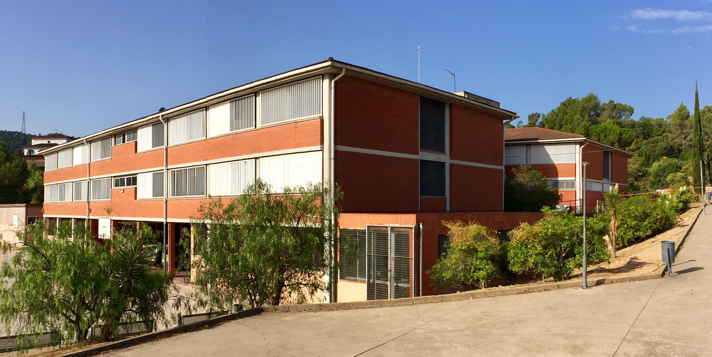

Institut Frederic Mompou
Sant Vicenç dels Horts
Pàgina d'inici
L'Institut Frederic Mompou és un centre educatiu de titularitat pública que imparteix ensenyaments de secundària i batxillerat. Està situat al municipi de Sant Vicenç dels Horts, a la província de Barcelona.
Adreça: Avinguda del Mas Picó, 65, 08620 Sant Vicenç dels Horts, Barcelona
Telèfon: 936563801

Accedir a iEduca (versió web)
Accedir al bloc
Creat a l'Institut Frederic Mompou